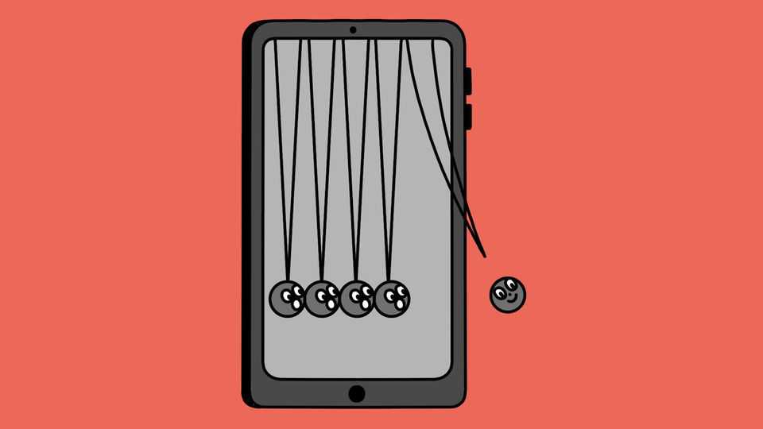

How to stop procrastinating
Thwarting the thief of time

Aug 6th 2026
PUTTING THINGS off exacts a hefty toll. One study published in 2013 ranked 22,053 people on a procrastination scale of one to five. Each increase of one point was associated with a drop of nearly $15,000 in annual earnings. Those who habitually engage in “self-regulatory failure”, as procrastination is also known, are more prone to delaying medical treatment. A study of 3,525 Swedish university students published in 2023 found that those who scored highly for procrastination were more likely to suffer debilitating pain.
It gets worse. The same Swedish study also found procrastinators more prone to anxiety, stress and loneliness. A 2025 meta-analysis, published in Frontiers in Psychiatry and covering 88 studies involving 63,323 people in 17 countries, found procrastination and its resulting erosion of self-esteem to be a predictor of future depression. How might procrastination be curbed?
Mental exercises appear to help. One set is known as mental contrasting with implementation intentions (MCII). Popularised in a number of smartphone apps, the idea is simple: picture the benefits of achieving a goal; contrast that image with the main obstacle; and devise a tactic to overcome it. In two randomised trials reported in 2020 undergraduates were given online MCII exercises designed to reduce the delaying of bedtime, which research has linked to procrastination in general. They missed their intended bedtimes by around 38 minutes less each night than those in a control group given advice about healthy sleeping habits.
Exercise shows promise too. A Chinese trial published in March assessed procrastination in 77 male teenagers. Those randomly assigned to 12 weeks of strength training, high-intensity interval training, or a combination of the two, showed “significant reductions” in putting things off. An earlier study of 564 Chinese university students, published in 2022, found that the most physically active also procrastinated less. The researchers speculated that overcoming the stress of exertion gave them a “sense of mastery” that boosted confidence and motivation.
Then there is the question of diet and other habits. A 2024 study of Italian university students found higher procrastination among breakfast-skippers, heavy drinkers and poor sleepers. The researchers speculated that missing the energy from breakfast might hinder “motivation and ability to focus on tasks”. But the skipped breakfasts may have been a consequence of procrastination, rather than a cause: studies have yet to show convincingly that diet affects it.
As for medications, none as yet targets procrastination. But an intriguing finding emerged in 2021 from an American randomised controlled trial. Adults with attention-deficit/hyperactivity disorder showed significant gains in cognitive executive function, including the ability to get started on tasks, while taking the stimulant lisdexamfetamine rather than a placebo.
These days, opportunities for procrastination are greater than before. Many people work from home, out of the boss’s sight. Smartphones offer endless distractions. In one review published in 2022, each of the 18 studies assessed linked excessive smartphone use to procrastination. Scrolling often delays bedtime, too. Lack of sleep impedes executive function, leading to more failures of self-regulation. It would be helpful if the scientists involved could stop dawdling.■
After a free, evidence-based guide to health and wellness? Sign up to our weekly Well Informed newsletter.